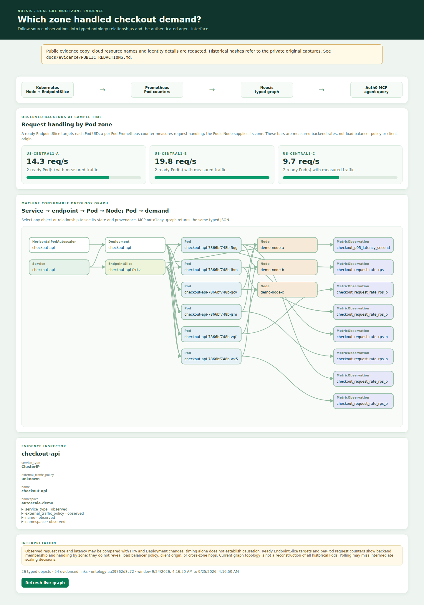
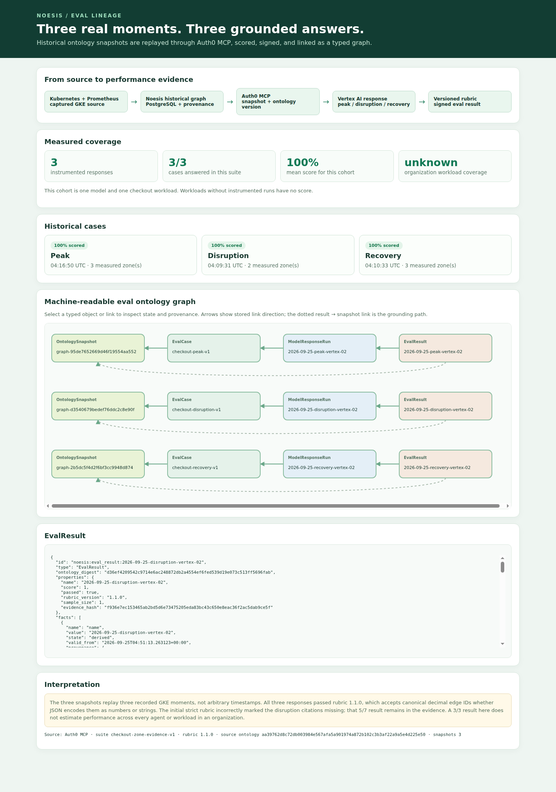

Imagine checkout slowing during a holiday sales rush. The chief executive asks whether the service kept up. The operator asks which Pods scaled and where requests were handled. The chief AI officer asks whether an agent may investigate and take action. Six months later, someone asks an AI assistant to reconstruct the event.
Those are four versions of one question: what happened in our business, and why should we trust the answer? The facts live in different systems. Kubernetes saw replicas and placement. Prometheus measured traffic. Git recorded change intent. Infrastructure inventory describes what those workloads depend on. None supplies the complete operational story.
The business problem
AI can generate an answer faster than a company can verify it
An enterprise may have a warehouse, dashboards, a CMDB, traces, documentation, and a vector index. The checkout Deployment still has to be joined to its Service, ready backends, Nodes, request counters, planned changes, and the agent allowed to act on it. People perform that join during incidents; each agent team repeats it in prompts and tool code. The expense is in reconstructing context, checking identities, resolving time, and checking which source supports each claim before anyone can make a decision.
In plain language, an ontology is an agreed map of things, their properties, their relationships, and the actions that can be taken on them. Noesis stores that map as named object and relationship types in PostgreSQL and returns it as JSON. Each fact includes its source and observation time.
This is why I think ontology belongs at the center of AI architecture. It gives the organization a shared contract for what things are, how they relate, which state was observed or planned, when each fact was valid, and what an authorized action means. The model reads the same named objects and relationships that a person can inspect, and its answer can cite the underlying source records.
The economic case
How expensive is missing context?
I do not have a measured enterprise-wide ROI for Noesis, and the demo cannot produce one. But the cost category is easy to size inside any organization. Count the people who repeatedly reconcile facts across systems, the minutes spent each week, and their loaded hourly cost. That gives a starting estimate of annual cost of reconciling facts. An ontology might reduce part of that work.
Estimate annual reconciliation cost
Change these assumptions to fit your team. The figure estimates time spent reconciling facts across systems; it does not predict Noesis savings.
With these assumptions, 250 people spend $600,000 a year on this reconciliation. At 2,000 people with the same pattern, the spend is $4.8 million. Neither number is a market estimate or a forecast of recoverable savings. A real business case should measure a baseline, the share Noesis actually removes, and the cost of operating the ontology.
The larger stakes are harder to price without company data: delayed incident decisions, mistaken automation, inconsistent customer impact estimates, and audit work after the fact. For a retailer, the value of knowing whether checkout demand shifted between zones depends on its own order volume, margin, and outage exposure. I would not turn a lab load test into a revenue-loss claim.
Who gets value
One shared model, four different decisions
The same ontology should answer different questions without giving every role the same interface or authority.
| Role | Question that matters | Value of a trusted ontology |
|---|---|---|
| Executive | Did checkout hold through peak demand, and which customer or revenue exposure can we prove? | A defensible account of demand, capacity, impact, and confidence. Customer and revenue correlation requires those sources to be ingested; our demo does not claim it yet. |
| Practitioner / SRE | Which workload changed, where did requests go, and what should I inspect before acting? | A typed path from Service to ready backend, Pod, Node, metric, and time-stamped change, with references to source records. |
| Chief AI officer | Can many agents share facts, scopes, actions, and quality measures without each inventing its own truth? | A versioned ontology and API contract, authenticated access, policy-checked actions, and records linking each evaluation to its inputs and score. |
| Builder | How does my agent discover what exists and what it is allowed to do? | Noesis APIs and MCP tools for query, traversal, explanation, history, and typed action validation. |
The Noesis experiment
I tested the design against live systems
I first connected real source records to an agent answer. I then tested an action with policy checks and an evaluation using records retained after cluster deletion. Select a flow to see where data and authority move.
From source to meaning to action
Auth0 issues the agent token; Noesis validates it at the MCP boundary. Auth0 is not a data source or a step in ontology ingestion.
A source fact is normalized into a typed graph; a verified agent queries Noesis MCP tools and receives relationship paths with source references.
Text alternative: source → adapter → typed PostgreSQL ontology → Auth0 protected MCP → agent. An action loops to Kubernetes and back through observation. Evaluation links a stored snapshot, case, model response, and scored result.
Graph structure
How the graph supported one answer
The graph tracks three distinctions needed to answer the checkout question correctly.
The right object
A Kubernetes Pod and a NetBox Device keep separate source identities. A documented mapping, supported by source records, links them where appropriate.
The right moment
Observed replicas, derived request rates, and a planned Git change carry different state kinds and timestamps.
The reason to believe it
Each stored fact includes its source identifier, observation time, and any calculation rule. Signed records preserve important agent decisions and actions.
For checkout, the operational answer followed Service → ready EndpointSlice → exact Pod UID → Node zone, then Pod → Prometheus metric for measured handling. A model could cite that path instead of merely saying “zone C was busy.” It also had to say what the path could not establish: the cloud load balancer’s routing algorithm and where clients originated.

A question with a real answer
Where did checkout demand go when capacity changed?
We started with a real CPU HPA cycle on kind. Its reported replica requests went 1 → 3 → 4 → 3 → 1; Noesis kept those reports separate from observed Deployment and Pod changes. The one-node setup could not explain zone handling. That missing answer drove the next experiment.
On a short-lived regional GKE cluster, one node ran in each of three us-central1 zones. The checkout service emitted per-Pod request counters. Kubernetes supplied ready backends and Node zones. Noesis joined them through exact Pod UIDs, then exposed the same typed graph to a browser and an Auth0 authenticated MCP client. The cluster was deleted after evidence collection.
For the disruption, we deliberately cordoned the experiment’s -c node and deleted its two checkout Pods. Ready endpoints fell from six to four; measured handling continued in -a and -b. Uncordoning restored six ready backends. This was a controlled backend simulation, not a physical GCP zone failure. The graph showed where backends handled requests; it did not reveal client origin or traffic steering policy.
From understanding to authority
An agent that knows more must still be allowed to do less
An agent that inspects a service may also request a change. That is the moment a shared ontology must carry actions, policy, and recorded outcomes alongside descriptions. In our demo, two real Auth0 clients had different roles. The Observer could inspect the graph but its scale request was denied. The Operator held the scale scope. Noesis validated its typed request, checked policy, called Kubernetes, and waited for fresh Deployment and Pod observations before recording an outcome.
The result was applied_degraded: the requested replica count changed while zero Pods were available. That distinction matters to an operator or executive. “The API accepted the command” is not the same as “checkout recovered.” In a separate A2A test, the Observer sent a signed degradation finding; the Operator verified it and recorded a signed defer_scale assessment. An independent verifier checked the hash linked evidence.
Six months later
Can the organization remember what the agent saw?
Once GKE was gone, a query for current checkout request rate correctly went stale. But a future executive question would still need the recorded peak. We saved a graph for each recorded period: peak, disruption, and recovery. Each graph includes source references, a content hash, and the ontology definition used at capture time. An authenticated MCP client retrieved them after the live ontology had advanced.
Vertex AI gemini-2.5-flash answered one bounded question for each moment. It cited the endpoint → Pod → Node and Pod → metric evidence paths, named the measured zones, and left client origin and load balancer policy unknown. A versioned deterministic rubric scored peak 8/8, disruption 7/7, and recovery 8/8.
The most useful failure was in the evaluator. Rubric 1.0.0 had scored the unchanged disruption answer 5/7 because valid edge IDs arrived as JSON strings. We kept that false negative and fixed the rubric to 1.1.0. The model did not get better between scores; our measurement did. Noesis stores the snapshot, case, response, and result as linked ontology objects, with signed evidence on import. An operator can later inspect which source data and scoring rules supported each result. These three responses do not measure organization-wide performance.

The decision point
What would I fund next?
I would start with one costly decision process in a real organization: a service incident, a customer-impact question, or a policy-controlled change. Measure how long teams currently take to join the evidence, how often answers conflict, and which actions require manual verification. Then ask whether a typed, shared ontology reduces that cost and improves the decision. Those measurements would show whether the architecture has a financial return.
Noesis is still a prototype. Polling can miss intermediate events. Captured snapshots replay recorded instants, not arbitrary times. The three-zone experiment was one region and measured backend handling; it cannot answer client origin, cross-zone hops, a physical zone outage, or multi-region failover. Customer and revenue correlation needs real customer and commerce sources. Three model responses do not measure performance across all AI workloads in an organization. A reproducible clean installation, hosted CI, retention rules, and source-outage handling remain release requirements.
Evidence references in the Noesis workspace: UT-011 (Auth0/MCP/A2A), UT-012 (HPA), UT-014 (three-zone GKE), UT-015 (single-case eval), UT-016 (historical evaluation). The kind and evaluation screenshots were captured from the running demo. The three-zone screenshot was rendered from the captured graph after node names were pseudonymized.